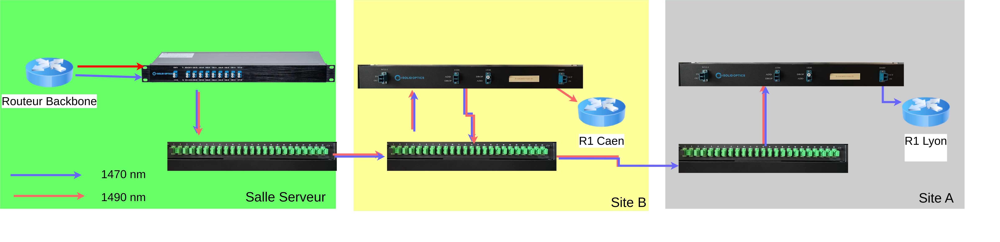

Mise en place d’une infrastructure multi-sites
Dans cette SAE, nous étions répartis en deux groupes : un groupe Infrastructure et un groupe Services. L’objectif était de concevoir et mettre en place une infrastructure réseau permettant de relier deux sites distants en utilisant différentes technologies telles que OSPF, VLAN et LDAP.
Chaque groupe disposait d’un chef de groupe chargé du suivi de l’avancement, ainsi que d’un intégrateur, responsable de la cohérence entre les différents lots.
Le projet s’est conclu par un oral de présentation durant lequel nous avons présenté les travaux réalisés, les difficultés rencontrées et les axes d’amélioration possibles.
J’étais membre du groupe Infrastructure. Ma mission principale consistait à réaliser une boucle fibre OADM entre les différents sites.
Pour cela, j’ai choisi et configuré deux longueurs d’onde par site en tenant compte des contraintes techniques et de la cohérence globale de l’infrastructure. Une fois la configuration terminée, j’ai vérifié la connectivité entre les sites afin de m’assurer du bon fonctionnement des transmissions optiques.

Schéma et mise en place de la boucle fibre optique multi-sites
AC21.06 – Travail en équipe
Collaboration au sein d’un groupe avec des rôles définis.
AC22.01 – Systèmes de transmissions complexes
Mise en place d’une transmission par fibre optique et longueurs d’onde.
AC22.03 – Connexion multi-site
Participation à la création d’une liaison entre plusieurs sites distants.
AC22.04 – Administration des réseaux d’accès
Compréhension du fonctionnement des réseaux opérateurs.
AC22.05 – Analyse du cahier des charges
Analyse des contraintes techniques et faisabilité du projet.
AC23.02 – Développement à partir d’un cahier des charges
Compréhension du lien entre infrastructure et services applicatifs.
AC23.03 – Protocoles réseau
Compréhension des protocoles assurant la communication entre services.
AC23.04 – Gestion de données
Compréhension du rôle des bases de données dans une infrastructure.
AC23.05 – Accès aux données
Accès et exploitation des données via les services déployés.
Cette SAE m’a permis de mieux comprendre la complexité d’une infrastructure réseau multi-sites et l’importance de la coordination entre les équipes Infrastructure et Services.
Le travail sur la fibre optique et les longueurs d’onde m’a apporté une vision plus concrète des réseaux opérateurs et des contraintes techniques associées. Cette expérience m’a également permis de développer mes compétences en travail collaboratif et en communication technique.